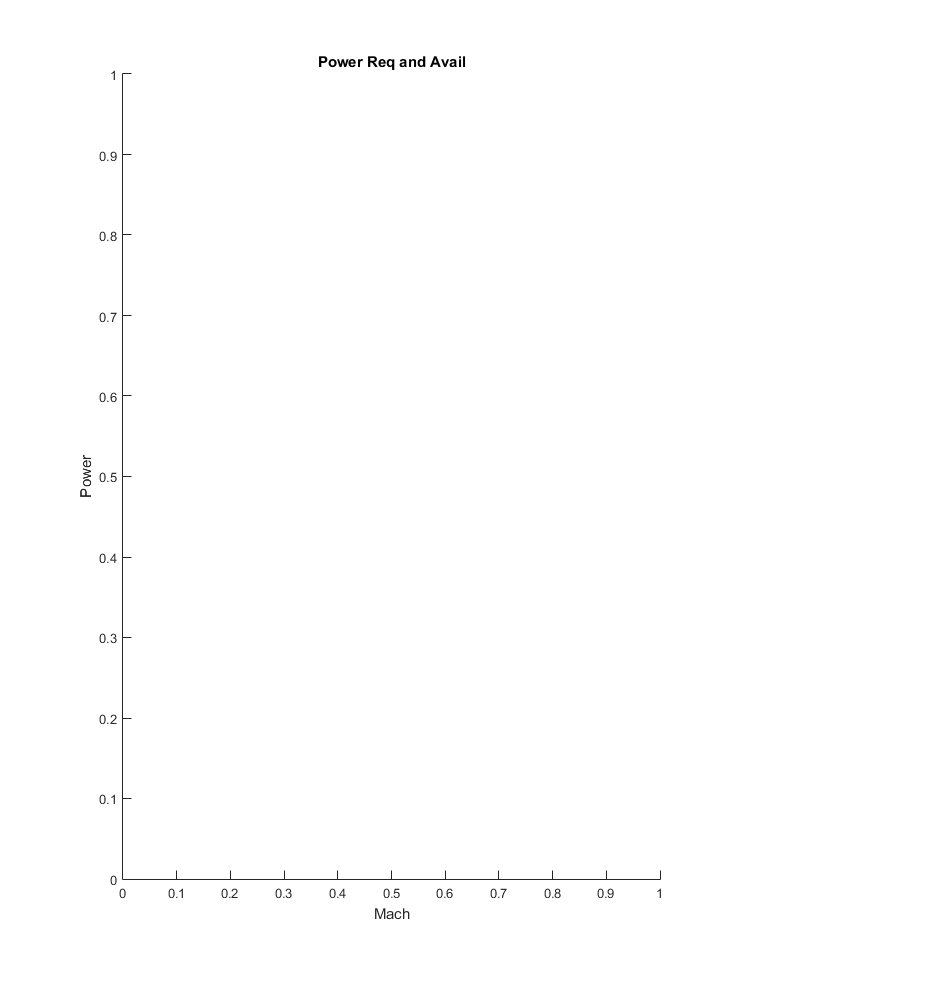
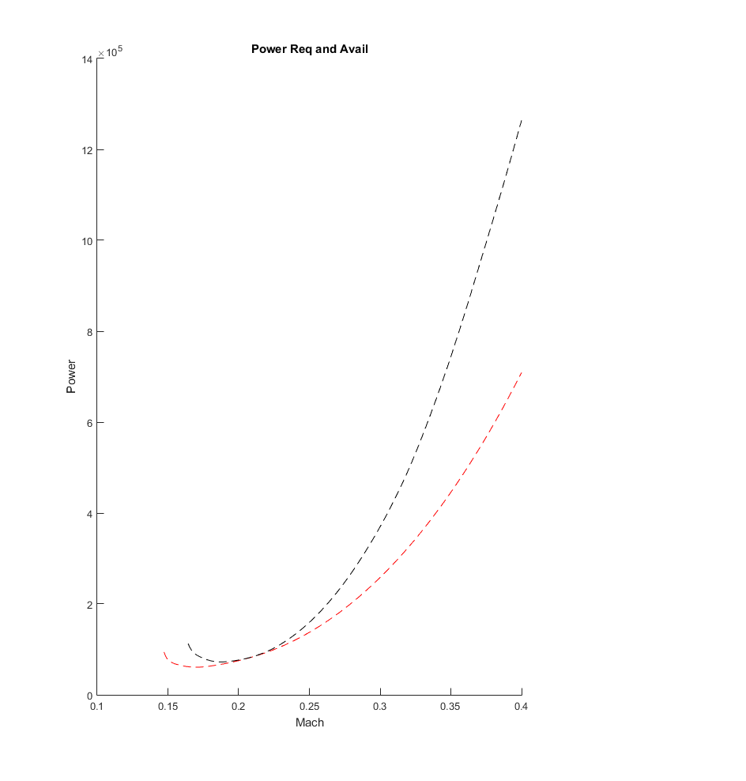
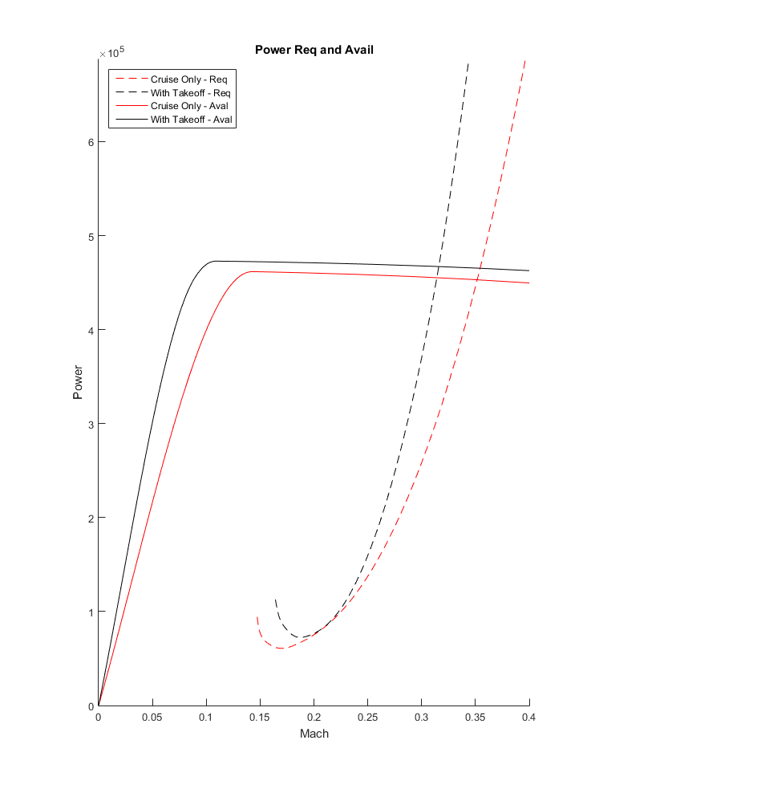
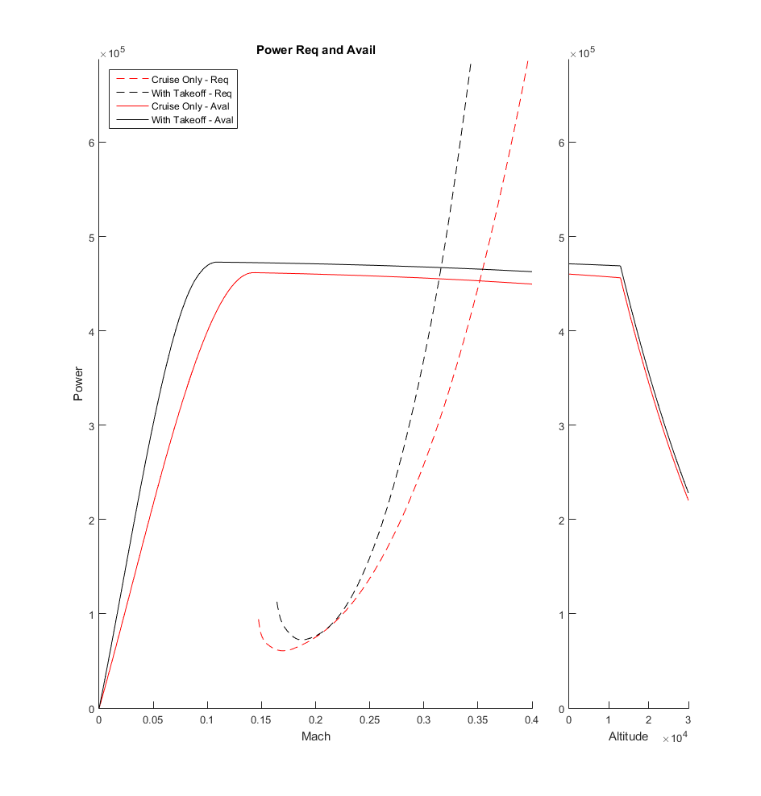
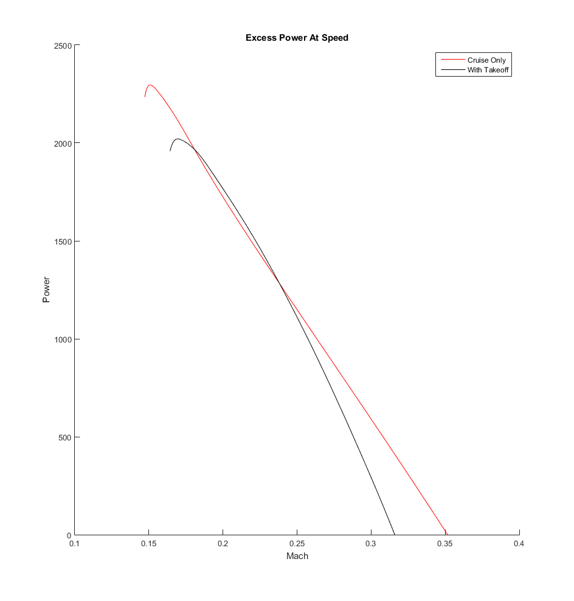

Script to Display Power Required and Power Avaialbe
This is only from a propeller standpoint. This is not including the following efficiencies:
Motor efficiencies - rpm efficiencies/voltage loses Transmission efficiencies - power lines from APUs to the motors/speed control APUs alternator - assuming APU is 100% from required to provided.
Look primarily at mach and alittude effects
Contents
Setup
clear; clc prop_const prop_T v2=@(v,t,h,pt) sqrt(t/(1/2*p(h)*A(pt))+v.^2); % velocity ratio, velocity, thrust, h airfoil_polar % sets up fuselage drag cd_new % sets up airfoil drag polar equations_wash figure(1) clf subplot(1,4,1:3) % taking up 3/4 of the plot area xlabel('Mach') ylabel('Power') title('Power Req and Avail')
Develop Power Required for SSL Flight Conditions
Lift = Weight at various mach and altitudes
numopts=[0,6]; h=0; % deal with sea-level for now solopts=optimoptions('fsolve','display','none'); parfor nitr=1:length(numopts) min_m=fsolve(@(m) L(15-incd,h,a(h)*m,numopts(nitr)+2)-W0(19),0.15,solopts); [xpp{nitr},ypp{nitr}]=fplot(@(m)... D(fsolve(@(aa) L(aa,h,a(h)*m,numopts(nitr)+2)-W0(19),3,solopts),... h,a(h)*m,numopts(nitr)+2)*... a(h)*m,[min_m 0.4]); end clr=['r','k']; for nitr=1:length(numopts) hold on chld{nitr}=plot(xpp{nitr},ypp{nitr}); chld{nitr}.LineStyle='--'; chld{nitr}.Marker='none'; chld{nitr}.Color=clr(nitr); end
Power Available
parfor nitr=1:length(numopts) min_m=fsolve(@(m) L(15-incd,h,a(h)*m,numopts(nitr)+2)-W0(19),0.15,solopts); [xa{nitr},ya{nitr}]=fplot(@(m)... T(a(h)*m,h,Pa,numopts(nitr)+2)*a(h)*m,[0 0.4]); end for nitr=1:length(numopts) hold on chld{nitr}=plot(xa{nitr},ya{nitr}); chld{nitr}.LineStyle='-'; chld{nitr}.Marker='none'; chld{nitr}.Color=clr(nitr); end ylim([0 Pa*1.25]) legend(... {'Cruise Only - Req','With Takeoff - Req','Cruise Only - Aval','With Takeoff - Aval'},... 'Location','NorthWest')
Altitude Effects
subplot(1,4,4) hold on parfor nitr=1:length(numopts) [xa{nitr},ya{nitr}]=fplot(@(h)... T(a(h)*0.2,h,Pa,numopts(nitr)+2)*a(h)*0.2,[0 30e3]); end for nitr=1:length(numopts) hold on chld{nitr}=plot(xa{nitr},ya{nitr}); chld{nitr}.LineStyle='-'; chld{nitr}.Marker='none'; chld{nitr}.Color=clr(nitr); end xlabel('Altitude') ylim([0 Pa*1.25])
Excess Power
figure(2); clf hold on xlabel('Mach') ylabel('Power') title('Excess Power At Speed') parfor nitr=1:length(numopts) min_m=fsolve(@(m) L(15-incd,h,a(h)*m,numopts(nitr)+2)-W0(19),0.15,solopts); [xpp{nitr},ypp{nitr}]=fplot(@(m)... T(a(h)*m,h,Pa,numopts(nitr)+2)-... D(fsolve(@(aa) L(aa,h,a(h)*m,numopts(nitr)+2)-W0(19),3,solopts),... h,a(h)*m,numopts(nitr)+2),[min_m 0.4]); end for nitr=1:length(numopts) hold on chld{nitr}=plot(xpp{nitr},ypp{nitr}); chld{nitr}.LineStyle='-'; chld{nitr}.Marker='none'; chld{nitr}.Color=clr(nitr); end % set(gca,'YScale','log') legend(... {'Cruise Only','With Takeoff'},... 'Location','Northeast') ycc=ylim; ylim([0 ycc(2)])